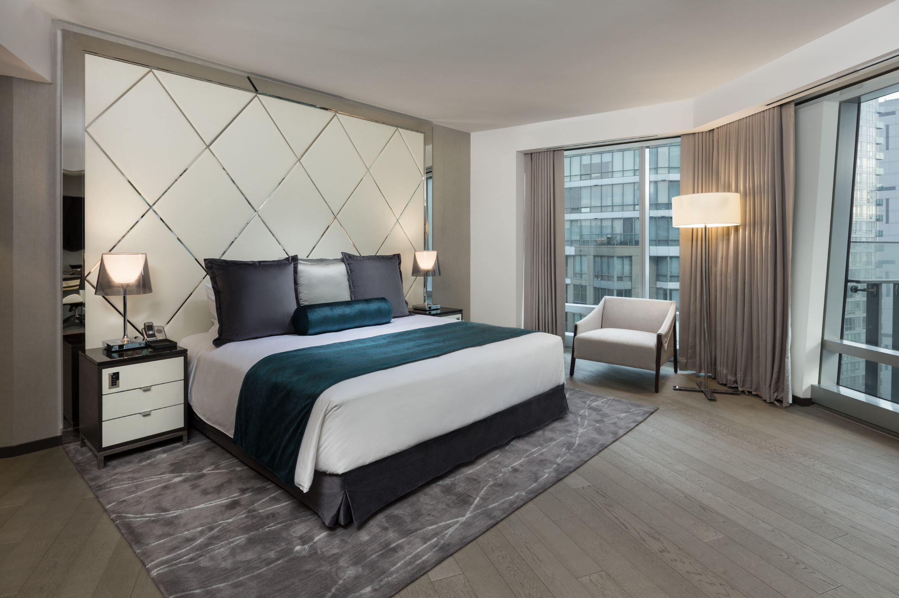
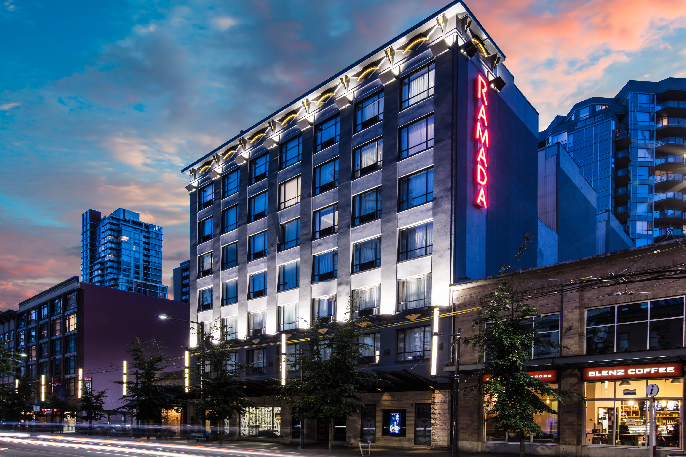

Trump International Hotel & Tower Vancouver
1161 West Georgia Street
Vancouver, BC V6E0C6
Phone: (604) 979-8888 , Toll Free: (866) 800-0295
Visit Website

At the heart of the Golden Mile, couture shopping, fine dining, entertainment and a buzzing financial center - the newly
opened Trump International Hotel & Tower® Vancouver is the most luxurious urban hotel in the city. The twisting tower
will stand at 616 feet (69 stories), transforming the city's skyline as the second tallest building. Situated on West
Georgia Street in Downtown Vancouver, the famed Arthur Erickson-designed twisting tower maximizes the window features
and views in every room, and because of this unique design, every room is distinctive with no two views exactly alike.

The hotel will feature 147 generously refined and luxurious residential-feeling guest rooms, Drai's Vancouver - the
city’s first poolside lounge, The Trump Champagne Lounge with a unique sipping list and artisanal crafted cocktails,
Mott 32 - the award-winning Chinese fine dining restaurant, the 5,000 sq.ft. The Spa by Ivanka Trump™ and 15,000 sq.ft.
of elegant meeting and event space including the 5,500 sq. ft Grand Ballroom. Above the hotel are 217 stylish
residences, offering spectacular views of English Bay, the North Shore and beyond. Trump International Hotel & Tower®
Vancouver takes what has never been done before to personalize and make exceptional your experience, from magnificent
architecture to luxury travel amenities to only the highest level of service you grow to expect with Trump Attaché®.
Ramada by Wyndham Vancouver Downtown
1221 Granville St
Vancouver, BC V6Z 1M6
Phone: 604.685.1111 , Toll Free: 1.888.835.0078
Visit Website

Ramada by Wyndham Vancouver Downtown is located in the Granville Entertainment District. Our hotel is now 100%
non-smoking and restyled in winter 2018. Our guests enjoy complimentary access to Steve Nash Fitness World, on-site
parking ($$) and Complimentary WIFI. Guests can dine and relax with Morrissey's Public House and mingle at TwelveWest
Ultra Lounge. Our location makes access to attractions, restaurants, shopping, nightlife and business services easy. We
are just 10 blocks from the Vancouver Convention Center and closer to many of our convention class hotels which allows
us to be a great cost effective alternative for business travel.

The spacious rooms and suites are beautifully furnished with granite countertops and outfitted with comfortable
pillow-top mattresses, 37’’ LCD TVs, complimentary tea and coffee, and more. Ramada by Wyndham Vancouver Downtown
provides a 24-hour concierge service, as well as convenient amenities including hotel parking, free fitness passes, and
dry cleaning. You won’t want to miss the hot breakfast, discounted for our guests, at the on-site Morrissey Pub and
Restaurant (a legend in its own right!).
Granville Island Hotel
1253 Johnston St
Vancouver, BC V6H 3R9
Phone: 604.683.7373
Visit Website

The Granville Island Hotel is a beautiful boutique hotel located on the waterfront of Vancouver's artisian district:
Granville Island . Guest rooms feature magnificent views of the ocean and city. The hotel's excellent service and
proximity to galleries, live theatres, shops, restaurants & the downtown core makes it a prime spot to relax or do
business while in Vancouver.

The Granville Island Hotel offers a one-of-a kind experience. With welcoming staff to greet, a restaurant and lounge
to entice, and a luxurious room to make you feel at home, the Granville Island Hotel is Vancouver's best kept secret.
With endless opportunities to dabble in local art & cuisine at the famous Public Market or to explore Vancouver by
bike or kayak, the Granville Island Hotel offers something for everyone.
Auberge Vancouver Hotel
837 Hastings St West
Vancouver, BC V6C 1B6
Phone: 604.678.8899
Visit Website

The Auberge Hotel is situated in the Terminal City Tower and is a landmark on the downtown Vancouver skyline. It offers
breathtaking views of the picturesque waterfront and mountain backdrop, and is the luxury hotel of choice for leisure
and business travelers looking to make the most of their Vancouver experience.

Nothing beats the convenience of having everything at your doorstep. With the multitude of shopping, dining and
entertainment attractions that surround the Auberge Hotel, your choices are limitless. You’ll be able to walk to the
Vancouver Convention Centre and Canada Place Cruise Ship Terminal as well as Stanley Park, the Vancouver Aquarium,
historic Gastown, and the trendy eateries and nightlife in Yaletown.